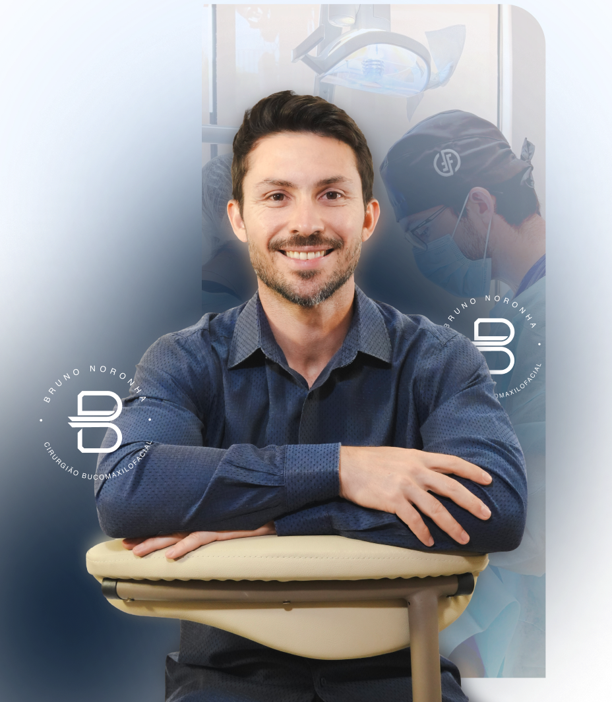
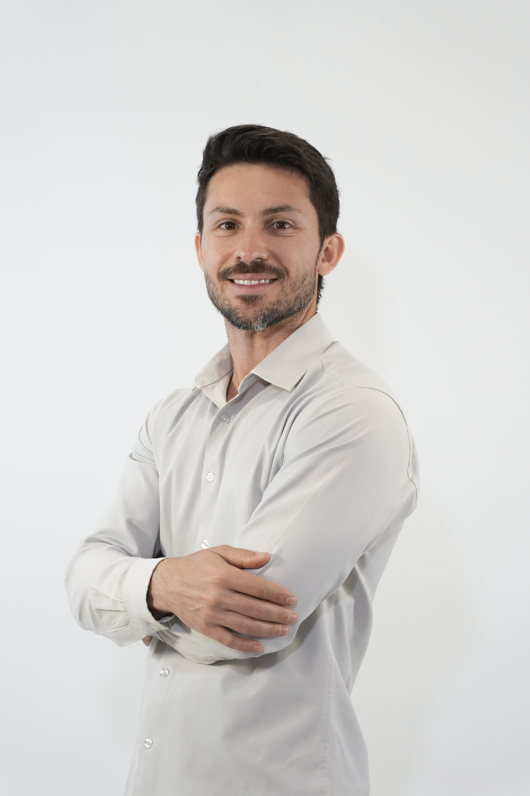
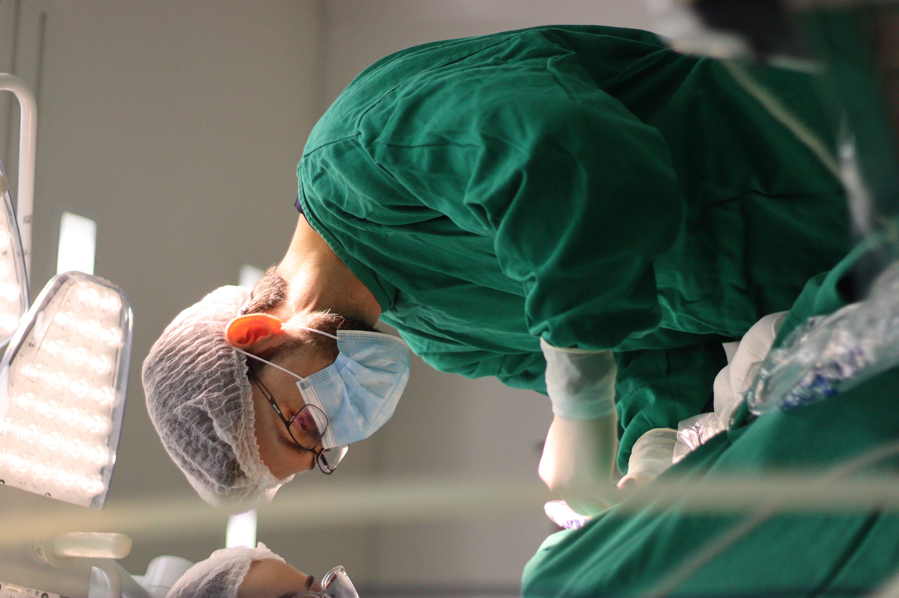
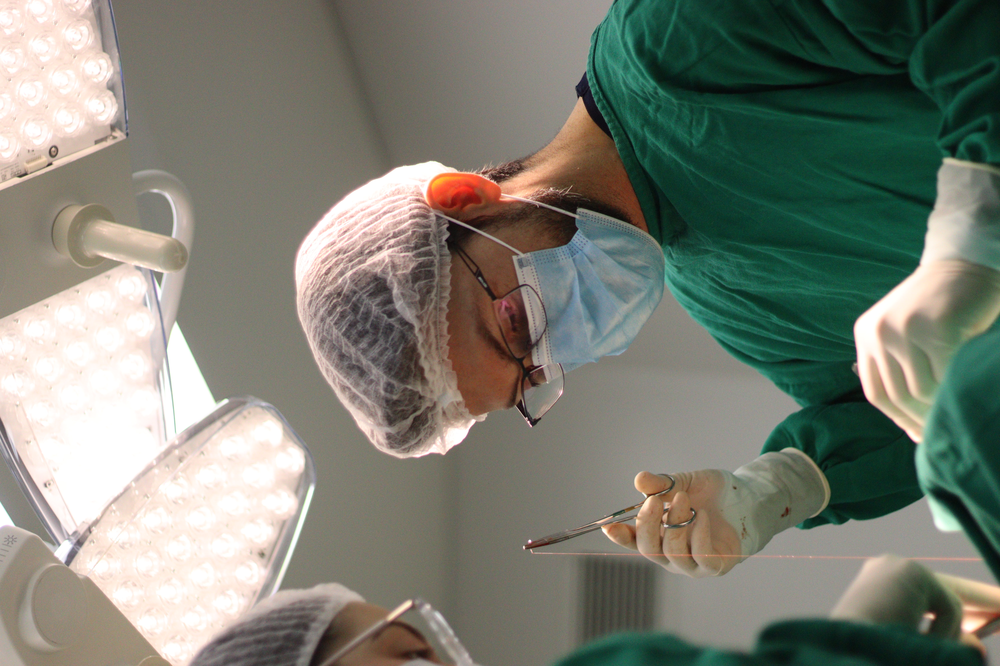
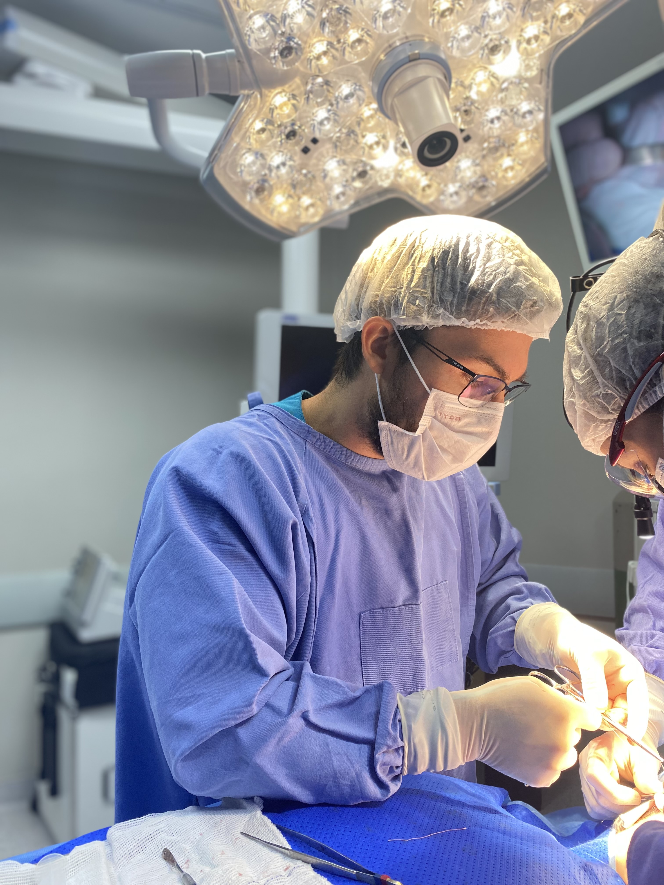
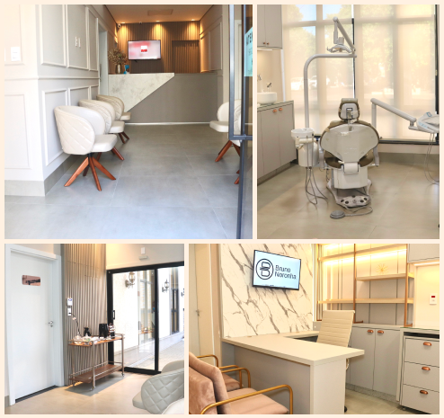

Chegou a sua vez de conquistar o contorno mandibular marcante e elegante, sem queixo duplo e com resultados definitivos e naturais.

O excesso de gordura na região da papada interfere diretamente na harmonia facial e na segurança pessoal.
A papada te faz parecer mais velho(a) e cansado(a) do que realmente é, mesmo cuidando da sua saúde e mantendo hábitos saudáveis?
Sente que a papada está tirando sua beleza natural, apagando a linha da sua mandíbula e prejudicando sua autoestima no dia a dia?
Mesmo estando no seu peso ideal ou emagrecendo, a papada teima em continuar e te faz parecer acima do peso em fotos de perfil?
Casos clínicos reais realizados em Rondonópolis-MT através de técnica cirúrgica precisa e personalizada pelo Dr. Bruno Noronha.


* Os resultados podem variar de acordo com as características biológicas e anatômicas individuais de cada paciente.
A lipo de papada é um procedimento acessível e definitivo, realizado em Rondonópolis-MT, que vai te deixar mais jovem, mais atraente, com o pescoço mais fino e a mandíbula mais marcada.
Eliminação cirúrgica da gordura localizada que causa o queixo duplo, ressaltando os ângulos fortes e harmônicos da mandíbula.
Aparência visivelmente mais jovem, leve e descansada. Alívio do peso facial que rejuvenesce toda a expressão estética.
Harmonização e escultura cirúrgica que respeita suas características anatômicas únicas, sem exageros ou artificialismos.

Cirurgião com sólida formação acadêmica, residência médica e mestrado em Bucomaxilofacial pelo conceituado Hospital Geral Universitário - HGU.
Como professor universitário na graduação e pós-graduação, compartilha conhecimento através de mentorias VIP para cirurgiões que buscam os mais altos padrões de excelência na estética e cirurgia facial.
Minha missão: Sou apaixonado por devolver autoestima e qualidade de vida aos meus pacientes através de tratamentos avançados e personalizados. Com vasta experiência clínica, dedico-me a oferecer o que há de mais moderno, seguro e refinado em odontologia e cirurgia facial.
Excelência técnica, ambiente esterilizado e cuidado cirúrgico rigoroso em cada paciente.



Histórias reais de quem transformou o contorno facial e recuperou a confiança diante das câmeras e no espelho.
Fiz a Lipo de Papada com o Dr. Bruno e o resultado superou todas as minhas expectativas! Eu evitava fotos de perfil porque a papada sempre me incomodava. A recuperação foi super rápida, quase sem dor e hoje meu pescoço é muito mais fino e desenhado. Recomendo de olhos fechados!
A segurança que o Dr. Bruno passa desde a consulta de avaliação é incrível. O procedimento foi tranquilo demais com anestesia local. Pareço ter emagrecido 5 quilos no rosto logo no primeiro mês! Minha autoestima mudou completamente.
Excelente profissional! Eu tinha muito medo de sentir dor ou de ficar com a pele flácida, mas o Dr. Bruno explicou tudo com muita clareza. O contorno da minha mandíbula ficou perfeito e muito natural.
Tudo o que você precisa saber sobre o procedimento de Lipoaspiração de Papada.
Não. O procedimento é realizado com anestesia local de alta precisão, garantindo total conforto e ausência de dor durante a sua realização. No pós-operatório, qualquer eventual incômodo leve é 100% controlado com analgésicos comuns receitados pelo Dr. Bruno.
A recuperação é muito rápida e tranquila. A grande maioria dos pacientes retoma suas atividades normais de trabalho em cerca de 2 a 3 dias, utilizando a faixa compressiva facial conforme o protocolo médico para acelerar a cicatrização e acomodação dos tecidos.
Sim! As células adiposas removidas da região submentoniana são eliminadas de forma definitiva e não voltam a se multiplicar. Mantendo um estilo de vida saudável e peso corporal estável, o contorno facial alcançado é definitivo.
O procedimento é indicado para mulheres e homens que apresentam acúmulo de gordura abaixo do queixo (queixo duplo) e desejam um contorno mandibular mais harmônico e jovem. Na consulta de avaliação individual, o Dr. Bruno examina sua estrutura anatômica para confirmar a indicação ideal.
Em conformidade com o Código de Ética do Conselho Federal de Odontologia (CFO), os valores de procedimentos cirúrgicos só podem ser informados após a consulta de avaliação individualizada, onde o Dr. Bruno avalia minuciosamente o seu caso. Oferecemos opções facilitadas de pagamento que serão apresentadas na sua consulta.

Um ambiente onde mulheres e homens podem experimentar tratamentos faciais com o mais alto padrão de segurança, conforto e qualidade cirúrgica.
Av. Tiradentes, N° 1521, Centro — Rondonópolis, Mato Grosso, 78700-028
Segunda a Sexta: 08:00 às 18:00
Sábado: 08:30 às 12:00
WhatsApp: +55 66 98103-6769